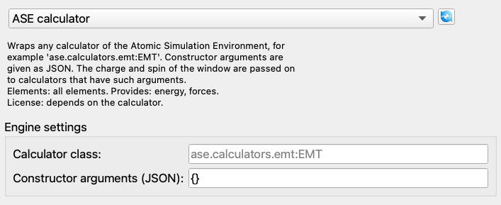
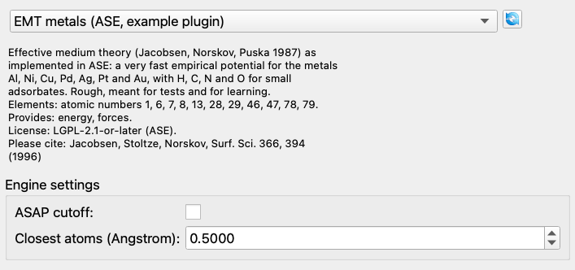
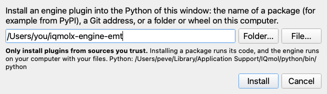

A plugin adds a calculation method to the Python Engines window without changing or recompiling IQMolX: it is a small Python package, and the window builds itself from what the package says about its method. This tutorial makes a complete plugin in about twenty minutes. It takes a calculator of the Atomic Simulation Environment (ASE), the effective medium theory (EMT), and turns it into an engine of its own with a name, a description, the right elements and settings. The same steps work for any other method that you can call from Python.
You need the Python environment of IQMolX (see
Setting Up Python), a text editor and, for step 8,
a terminal. No programming beyond reading Python is needed to follow along. The complete
plugin is in the IQMolX sources, in python/examples/iqmolx-engine-emt, and the
tests of IQMolX install and run it, so the code on this page is the code that works. The
reference for every detail is the developer guide PLUGINS.md in the
python/iqmolx-engines folder.
The calculations of the Python Engines window are done by a helper program that IQMolX starts in the Python environment. An engine is a class in that helper. The class has two kinds of parts:
Before writing code, see what you get for free. The window has an engine that runs any ASE calculator: choose ASE calculator in the Engine list, press its Install ase button if it asks for it, and type ase.calculators.emt:EMT in Calculator class.

Open cu4.xyz (from the example folder) with File→Open and run a geometry
optimization: it works. But the window knows nothing about EMT. It says that all elements
are possible (try iron: EMT has no parameters for it, and ASE answers with an error), the
settings are a line of text and a JSON field, and there is no description, license or
citation. A plugin of its own fixes all of this.
Make a folder iqmolx-engine-emt with this content (the names of the files matter, the name of the folder does not):
iqmolx-engine-emt/
pyproject.toml
src/
iqmolx_engine_emt/
__init__.py
pyproject.toml describes the package and, most important, says where the engine is:
[build-system]
requires = ["setuptools>=61"]
build-backend = "setuptools.build_meta"
[project]
name = "iqmolx-engine-emt"
version = "0.1.0"
description = "Example plugin for IQMolX: the effective medium theory (EMT) calculator of ASE"
readme = "README.md"
requires-python = ">=3.9"
license = { text = "GPL-3.0-or-later" }
# ASE is what this plugin adds to the environment. The helper (iqmolx-engines) is already
# there and is not listed, see PLUGINS.md.
dependencies = ["ase"]
# This is what makes the helper find the plugin: the group is "iqmolx_engines", the value
# points at an Engine subclass. The name on the left of the = is free.
[project.entry-points."iqmolx_engines"]
emt = "iqmolx_engine_emt:EmtEngine"
[tool.setuptools.packages.find]
where = ["src"]
__init__.py starts with the imports and the class. Everything in it is what the window shows or checks:
import importlib.util import numpy as np from iqmolx_engines.base import Engine, EngineError, option
class EmtEngine(Engine):
name = "emt" # what load requests call it
title = "EMT metals (ASE, example plugin)" # what the window shows
description = ("Effective medium theory (Jacobsen, Norskov, Puska 1987) as implemented in ASE: a "
"very fast empirical potential for the metals Al, Ni, Cu, Pd, Ag, Pt and Au, with "
"H, C, N and O for small adsorbates. Rough, meant for tests and for learning.")
license = "LGPL-2.1-or-later (ASE)"
citation = "Jacobsen, Stoltze, Norskov, Surf. Sci. 366, 394 (1996)"
elements = (1, 6, 7, 8, 13, 28, 29, 46, 47, 78, 79) # H C N O Al Ni Cu Pd Ag Pt Au
charge = False # neutral only
multiplicity = False # no spin
properties = ("energy", "forces") # energy and forces are mandatory
requirements = ("ase",) # what the Install button of the window installs
| name | The identifier of the engine in the protocol and in the stored settings. It must be different from the built-in engines (demo, ase, torchani, pyscf, ...): those win. |
| title, description | The name in the Engine list and the text below it. |
| license, citation | Shown in the window. State the license of the method and of its parameters honestly; the window is where students look. |
| elements | The atomic numbers that the method can do, or None for all. The helper refuses other elements before your code runs, and the window shows the list. |
| charge, multiplicity | Whether the method accepts a charged or open-shell molecule. With False the helper refuses them. |
| properties | What compute can return. energy and forces are required. Without a hessian IQMolX makes the vibrational frequencies from differences of forces by itself, as it does here. |
| requirements | The pip requirements of the engine. If they are missing, the engine is still listed and the window shows an Install button for exactly these. |
options describes the settings that appear in the window. Each is made with option(name, title, type, default, ...); the types are bool, int, float, string and choice.
options = (
# scope "load" (the default): applied when the model loads
option("asap_cutoff", "ASAP cutoff", "bool", False,
description="Use the cutoff of the ASAP program instead of the ASE one; the energies "
"differ by about 1e-6 eV."),
# scope "compute": sent with every calculation, so changing it needs no new load
option("min_distance", "Closest atoms (Angstrom)", "float", 0.5, scope="compute", min=0.0, max=2.0,
description="EMT is meaningless when atoms almost touch (two copper atoms at 0.05 "
"Angstrom have 1264 eV). A structure with atoms closer than this is refused; "
"0 switches the check off."),
)
The scope says when a setting is used. A load setting (the default) is given to load, so changing it loads the method again; this is right for what is expensive to change, such as the model. A compute setting is sent with every calculation to compute, so changing it costs nothing. Settings can also have a min and max, a choices list, required, placeholder and show_if (shown only for some values of another setting); see the developer guide.

This is how the two settings appear in the window once the plugin is installed
(step 7).
@classmethod
def unavailable_reason(cls):
# The engine is listed even when ASE is missing: the window then says what is missing and
# offers to install it. Do not import ASE at the top of the module for this reason.
if importlib.util.find_spec("ase") is None:
return "ASE is not installed (pip install ase)"
return ""
A method needs its Python packages, and the window must be able to list the engine even
when they are missing, so that it can offer to install them. That is why ASE is not imported
at the top of the file, and why unavailable_reason says what is missing without
importing it. An empty text means that the engine can run.
def load(self, options, ctx):
from ase.calculators.emt import EMT
self.calc = EMT(asap_cutoff=options["asap_cutoff"])
return {"calculator": "ase.calculators.emt.EMT"} # shown in the status line
load gets the method ready and is called once, when the engine is chosen or a load setting changes. A neural network would load its weights here, and could report how far it is with ctx.progress(fraction, message). What it returns is shown in the status line.
def compute(self, numbers, coordinates, charge, multiplicity, want, options, ctx):
from ase import Atoms
atoms = Atoms(numbers=numbers, positions=coordinates) # Angstrom, no periodic cell
if len(numbers) > 1 and options["min_distance"] > 0.0:
distances = atoms.get_all_distances()
np.fill_diagonal(distances, np.inf)
if distances.min() < options["min_distance"]:
raise EngineError("engine_error", "Two atoms are only %.2f Angstrom apart; EMT is not "
"meaningful for that" % distances.min(),
detail="Move the atoms apart, or lower the closest distance allowed "
"in the settings.")
atoms.calc = self.calc
# Units are eV and eV/Angstrom, the units of ASE and of the protocol: no conversion
return {"energy": float(atoms.get_potential_energy()),
"forces": np.asarray(atoms.get_forces())}
compute is called for every energy and force that IQMolX needs, and in a geometry optimization that is many times. It receives the atomic numbers, the coordinates in Ångstrom (a numpy array), the charge and spin multiplicity, the list of what is wanted and the compute settings, and returns a dictionary with the energy in eV and the forces in eV/Ångstrom (minus the gradient). These are the units of ASE, so nothing is converted here; for a method in other units the conversion belongs in this method.
A calculation that cannot be done is reported with
raise EngineError(code, message, detail=...). The message appears in the window
and the detail is kept for the log. Any other Python error also becomes an error message
instead of stopping IQMolX. A long calculation should call ctx.check_cancel()
now and then, so that the Cancel button works.
In the Python Engines window press Install Plugin....
A small window asks what to install: the name of a package (a plugin that someone published), a Git address, or, with Folder... and File..., a folder or a wheel on your computer. Choose the folder iqmolx-engine-emt and press Install.

The window runs the package installer of the environment, shows its output, and lists the engines again. EMT metals (ASE, example plugin) is now in the Engine list with its description and settings. Open cu4.xyz, choose the engine and run a geometry optimization. Then move two atoms almost onto each other and run again: the window refuses with the message of your EngineError, and lowering Closest atoms to 0 lets the (meaningless) calculation through.
Only install plugins from sources that you trust. Installing a package runs its code, and an engine runs on your computer with your files.
The same can be done in a terminal, which is also what you want while developing, because -e installs the folder in place, so that edits are picked up:
PY="$HOME/Library/Application Support/IQmol/python/bin/python" uv pip install --python "$PY" -e ./iqmolx-engine-emt
(uv is the installer that IQMolX uses; PY is the Python of the
IQMolX environment. If you chose your own Python in the window, use that one.) Then press
Refresh (next to the Engine list): a running helper notices a plugin that was installed after it started.
The code of a plugin that was already loaded is not read again: after you edit it,
quit and start IQMolX.
The helper can be asked what it finds, with nothing else running. This lists your engine and its description as the window will see it:
"$PY" -m iqmolx_engines --describe | grep -A3 '"name": "emt"'
The helper speaks one JSON message per line on its standard input and output (the PROTOCOL.md in the same folder describes every message), so a calculation can also be tried by hand. Load the engine, calculate a copper dimer at 2.4 Å, and then two atoms that almost touch:
printf '%s\n' \
'{"id":1,"type":"load","engine":"emt"}' \
'{"id":2,"type":"compute","numbers":[29,29],"coordinates":[[0,0,0],[0,0,2.4]]}' \
'{"id":3,"type":"compute","numbers":[29,29],"coordinates":[[0,0,0],[0,0,0.05]]}' \
| "$PY" -m iqmolx_engines 2>/dev/null
The answers are (the first line announces the helper):
{"event":"ready","protocol":1,"helper":"0.1.1","python":"3.12.7"}
{"id":1,"ok":true,"result":{"engine":"emt","info":{"calculator":"ase.calculators.emt.EMT"}}}
{"id":2,"ok":true,"result":{"energy":3.504405458151052,"forces":[[0.0,0.0,2.3571882814086518],[0.0,0.0,-2.3571882814086518]]}}
{"id":3,"ok":false,"error":{"code":"engine_error","message":"Two atoms are only 0.05 Angstrom apart; EMT is not meaningful for that","detail":"Move the atoms apart, or lower the closest distance allowed in the settings."}}
For a real plugin, write tests with pytest. The test file of this example, tests/test_plugin_emt.py of the helper, calls the engine directly and checks the energy against ASE, the forces against differences of the energy, the error, and the whole way through the installed plugin. This is the first one:
def test_energy_and_forces_of_a_copper_dimer():
res = run(make(), [29, 29], [[0, 0, 0], [0, 0, 2.4]])
assert res["energy"] == pytest.approx(3.50440546, abs=1e-6) # eV, from ASE itself
assert res["forces"][0] == pytest.approx([0.0, 0.0, 2.35718828], abs=1e-6)
assert res["forces"][0] == pytest.approx(-res["forces"][1])
Forces that are not minus the gradient of the energy are the commonest mistake of a
new engine (a geometry optimization then wanders or never converges), so a test of
the forces by finite differences, like the second test of that file, is worth copying.
| The engine is not in the list | Press Refresh (the circular arrows next to the Engine list). Then check that the plugin was installed into the Python shown in the window (a plugin in another Python is not seen), and run the --describe command of step 9 with the same Python: the helper prints a line on its error output for a plugin that it cannot use, for example cannot load plugin emt: ... (the package fails to import), is not an Engine subclass, or has no engine name. |
| Not available in the list | A package of requirements is missing: press the Install button that appears next to the list. |
| hidden by the built-in engine | The name of the plugin is the name of an engine of IQMolX. Choose another. |
| A change to the code has no effect | The helper keeps what it has already imported. Quit and start IQMolX. |
| The installer reports an error | Read its output in the window: a misspelled name, a missing pyproject.toml, or a dependency that cannot be installed. A plugin must not list iqmolx-engines as a dependency. |
| Optimizations do not converge | Check that the forces are minus the gradient of the energy, in eV/Ångstrom (test 2 of the example). |